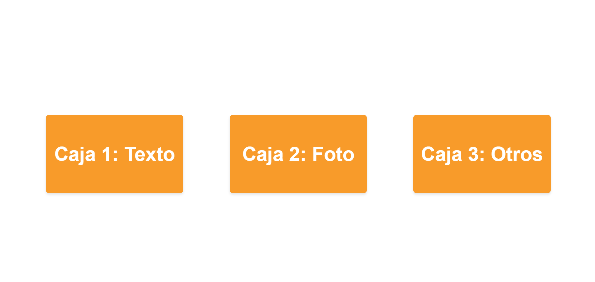
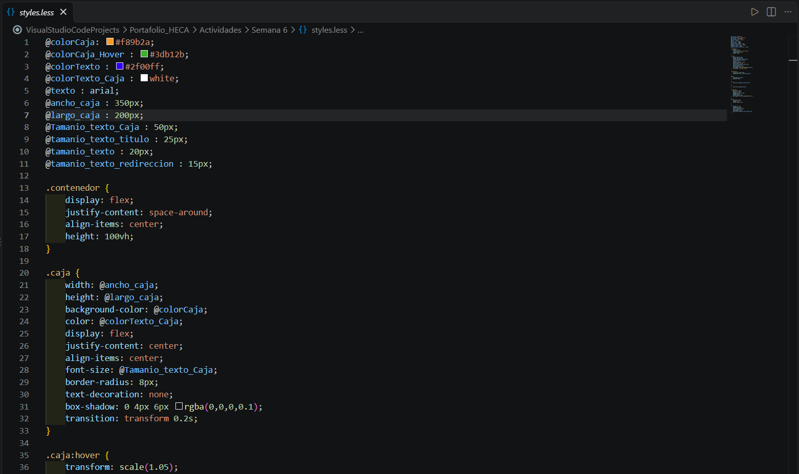

Semana 6
El preprocesador LESS y sus ventajas
Logro de Aprendizaje:
Al finalizar la sesión de aprendizaje el estudiante conoce sobre los procesadores LESS, sus ventajas que tiene estos en las paginas web, para poder aplicarlos en los casos prácticos.
Preprocesador LESS:
LESS (Leaner Style Sheets) es uno de los preprocesador de CSS que
extiende el lenguaje CSS añadiendo características avanzadas de
programación.
Esta misma, permite una mayor flexibilidad y reutilización del
código CSS mediante variables, anidamiento, mixins, y funciones.
Caracteristicas:
- Variables:
- Anidamiento:
- Mixins:
- Funciones:
Permiten almacenar valores reutilizables como colores o tamaños.
Por ejemplo: @primary-color: #333;
Facilita la escritura de selectores jerárquicos dentro de otros, reflejando la estructura HTML.
Permiten agrupar y reutilizar bloques enteros de propiedades de estilo.
Es posible realizar cálculos matemáticos y manipular valores de color directamente en los estilos.
Ventajas:
- Facilidad de entender e implementar
- Sintaxis similar a CSS tradicional y SCSS
- Desarrollo modular
- Automatización con operaciones y funciones
Actividad Practica:
Modificar la "Actividad Practica 2" para que utilice las funciones de LESS

